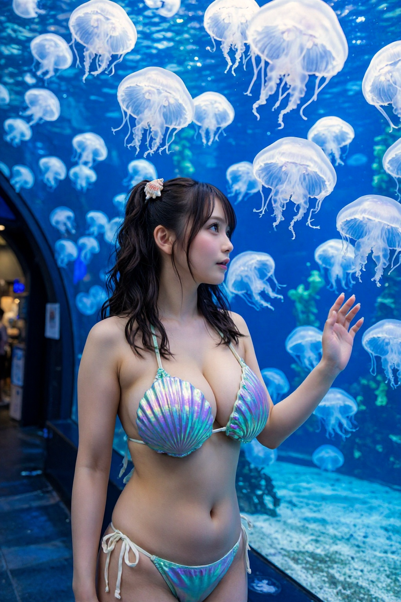
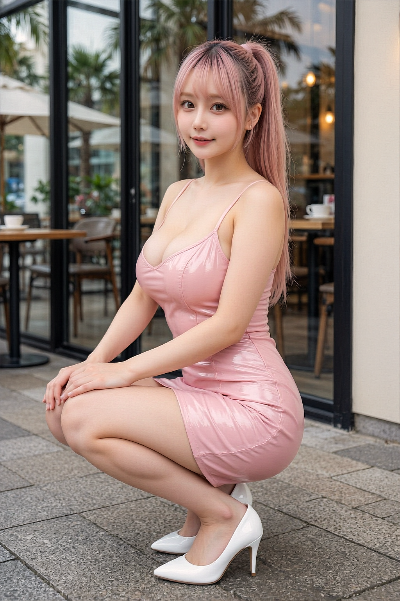
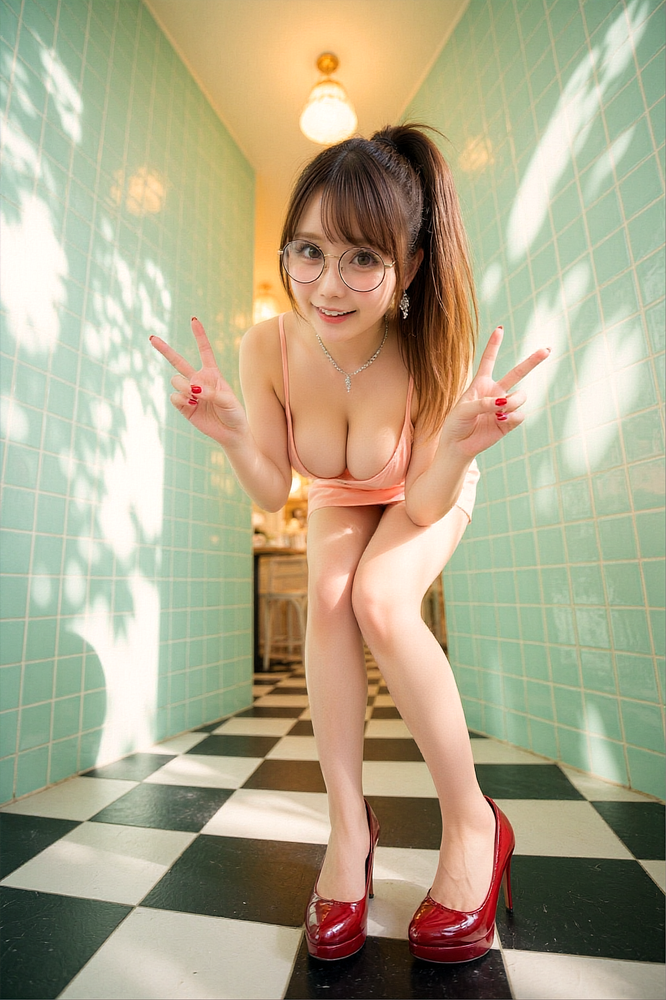

Projects

TAKATO Portfolio
LiveComfyUIを使ったAI画像クリエイターのポートフォリオサイト。Z-ImageやWAN 2.2を活用した高品質ビジュアル制作。

Z-Image Prompt Builder
LiveZ-Image (Turbo/Base) 向けの構造化プロンプトビルダー。カメラ・ライティング・マテリアルをプリセットから選択して最適なプロンプトを生成。

LowShot.ai Ver2
Liveローアングル特化型プロンプト生成ツール。ボタン1つで迫力あるローアングル構図のプロンプトを自動生成。
OffShot.ai
Live超広角ローアングル特化型のプロンプト自動生成ツール。17種類のパラメータでZ-image向けの迫力ある構図を生成。